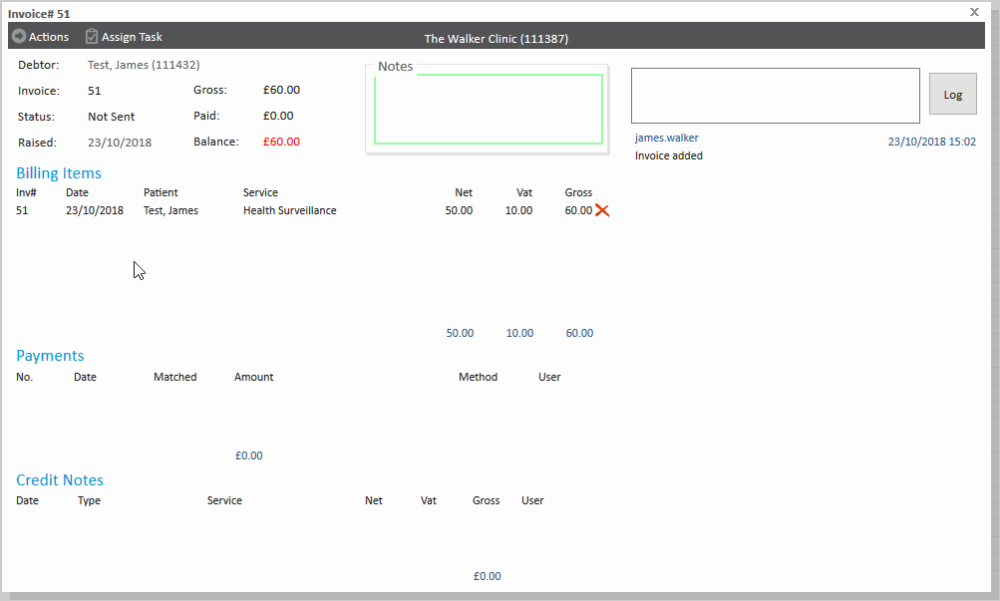
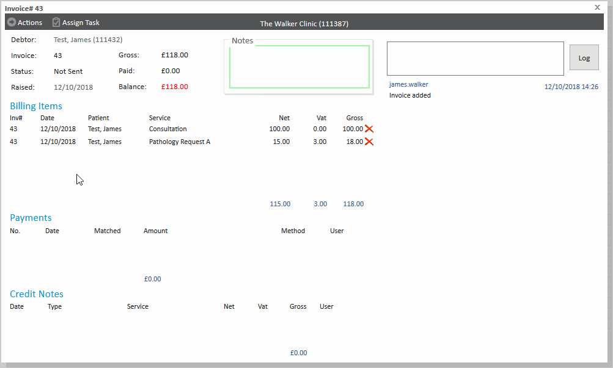

Meddbase allows for users to move billing items from one invoice to another, either the same debtor or to a different debtor. This can be done by adding the item to an existing invoice, or generating a new invoice,
What is the purpose of the article?
Once an invoice has been created, it is possible to move the individual billing items from one invoice to another invoice, so long as the invoice you are moving it from, and the invoice you are moving it to, have not been marked as sent.
The article will provide a guide as to how to move billing items from one invoice to another. This article has been split into the following sections:
Moving billing items to another invoice
Moving billing items to a new invoice for the same debtor
Moving billing items to a new invoice for a different debtor
Moving billing items to another invoice
To move a billing item from one invoice to another, follow these steps:
Open up the invoice you wish to move the billing item from.
Click on the billing item you wish to move. A popup window will appear allowing you to edit the billing item.
Click on the invoice number. A popup window will appear allowing you to reassign the item to another invoice, create a new invoice for the same debtor, or create a new invoice for another debtor.
Set the invoice number and click Save.

Moving billing items to a new invoice for the same debtor
If you wish to move billing items to a new invoice for the same debtor, follow these steps:
Open up the invoice you wish to move the billing item from.
Click on the billing item you wish to move. A popup window will appear allowing you to edit the billing item.
Click on the invoice number. A popup window will appear allowing you to reassign the item to another invoice, create a new invoice for the same debtor, or create a new invoice for another debtor.
Click '...assign to a new invoice for this debtor'

Moving billing items to a new invoice for a different debtor
If you wish to move billing items to a new invoice for a different debtor, such as an insurer or other company, follow these steps:
Open up the invoice you wish to move the billing item from.
Click on the billing item you wish to move. A popup window will appear allowing you to edit the billing item.
Click on the invoice number. A popup window will appear allowing you to reassign the item to another invoice, create a new invoice for the same debtor, or create a new invoice for another debtor.
Click '...assign to a new invoice for another debtor'
Choose the company you wish to assign the invoice to.